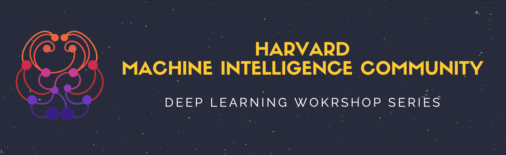

Workshops
- Time: Fridays, 4.00 pm - 5.00 pm
- Location: Harvard Hall 104
What are Deep Learning Workshops?
Each workshop will have a quick lecture on a subject in deep learning (such as Neural Networks, CNNs, LSTMs, GANs, etc.) and will conclude with a lab in PyTorch!
Why should I attend the workshops?
To learn the inner workings of Neural Networks from theory to practice
To train and test your own models on public datasets
To compete within the Harvard community via Kaggle challenges
To find partners to collaborate on projects with
To learn how to use PyTorch
How much Machine Learning do I have to know to participate?
No formal experience is required!
(We'll cover everything from scratch.)
If you want to learn more:
Join our Slack and the #workshops channel or email harvardmic@gmail.com
Spring 2019
| Date | Topic | Presenter |
|---|---|---|
| March 8, 2019 | Intro to Deep Learning and Pytorch Slides Practice Notebook Solutions Notebook Feedback |
Sean Sullivan |